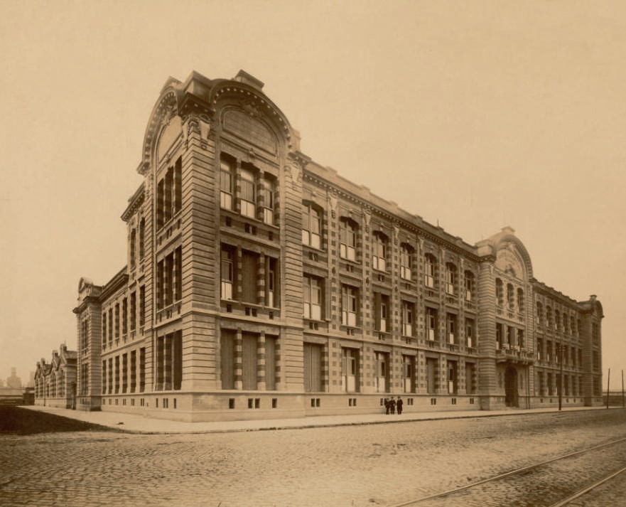

Colecciones
Piezas, maquetas y herramientas que muestran la evolución del trabajo técnico.
El Museo Tecnológico «Ingeniero Eduardo Latzina» conserva la memoria técnica de la escuela y del país a través de piezas, modelos y herramientas que explican cómo se formó la educación industrial.
Su valor patrimonial se expresa en la preservación del saber artesanal, el trabajo práctico y la historia de la enseñanza técnica.

Piezas, maquetas y herramientas que muestran la evolución del trabajo técnico.
Espacios que conectan la enseñanza práctica con la memoria institucional.
Un relato vivo sobre la historia de la escuela, sus personas y su legado.
Un recorrido por los hitos que marcaron la identidad técnica de la institución.
Las visitas se realizan con reserva previa y tienen una duración aproximada de 50 minutos.
Entrada pública gratuita · Martes y jueves
Visita abierta a cualquier persona fuera de la institución. Los grupos se forman con cupo limitado.
Para docentes que traen alumnos de nivel primario, secundario o superior. Se requiere número de CUE de la institución.
Para organismos públicos, empresas y entidades privadas. Incluye atención personalizada y posibilidad de actividades especiales.